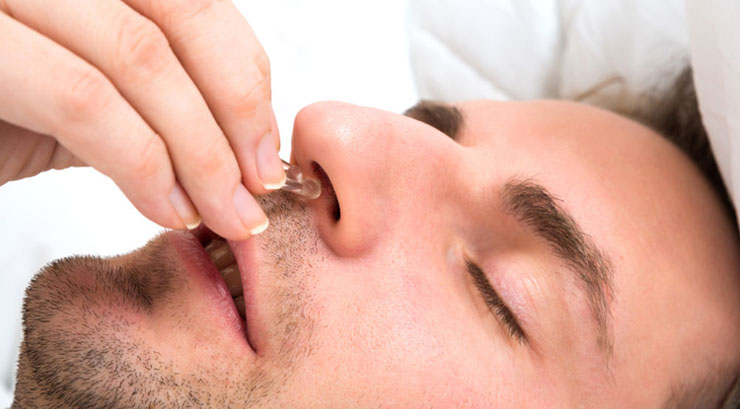
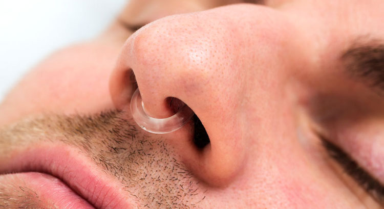

Voilà nos conclusions après avoir utilisé « Anti-Snoring Septum », le clip magnétique qui empêche de ronfler. Vous pensiez que vous étiez abonné à ronfler pour la vie et que jamais personne ne trouverait le moyen de vous aider à ne plus ronfler ? Que nenni ! Désormais, vous allez pouvoir ranger vos angoisses au placard car nous venons de découvrir un objet révolutionnaire qui pourrait faire cesser, à tout jamais, vos ronflements. Mais aussi de vos apnées, si vous en avez.
Mon dieu, mais qu'est-ce donc? Une fausse pub ? Un mirage aux alouettes (Alouette, Alouette, gentille alouette) ? Une illusion ? Pire, une arnaque… ! Rassurez-vous, c’est aussi ce que nous nous sommes dit, nous les ronfleurs… et puis, on s’est penché sur la question, on l’a testé… et voilà ce qu’on peut en dire.
Son nom de baptême, le « Anti-Snoring Septum » est un tout petit appareil en forme d’anneau, pratique, mini, simple que l’on place dans le nez dont le but est de favoriser l’ouverture des narines en les écartant. Très simple d’utilisation mais surtout très efficace pour réduire le ronflement, agir sur les apnées du sommeil et améliorer globalement la qualité des nuits du ronfleur, vous, moi, qui dormons mal à cause de nos ronflements ou de nos apnées et qui empêchons tout le monde de dormir, conjoints (e) compris. « Oui, Chérie, je sais, ce n’est pas drôle… ».
Mais tout d’abord, qu’est-ce que le ronflement ? Très inconfortable, le ronflement n’est pas, à proprement parler, une pathologie, mais a néanmoins de vraies conséquences pour celui qui le subit et devient invivable pour ceux qui l’entendent. Appelé aussi « ronchopathie », il intervient à l’inspiration lors du relâchement de la langue et de la gorge au moment de l’endormissement donnant lieu chez certaines personnes à un blocage des tissus de cette zone et du fond du palais. La conséquence en est un vibrato lors de la respiration, insupportable et insoutenable pour quiconque se trouve à proximité (la femme, le mari, les enfants, les grands-parents pendant les vacances, le patron, deux chambres plus loin, à l’hôtel, pendant un séminaire, la honte !).
Et ce n’est pas tout... car au ronflement peuvent venir s’ajouter les apnées du sommeil, qui peuvent se produire également chez les non-ronfleurs, induisant une grande fatigue et des somnolences dans la journée par les arrêts respiratoires involontaires qu’elles provoquent la nuit.
Et bien, en fait, c’est très simple. Spécialement conçu pour faciliter le débit respiratoire et améliorer la qualité de la respiration pendant le sommeil, le « Anti-Snoring Septum » s’adapte le plus simplement du monde, grâce à son système d’aimants, à toutes sortes de narines. Les vôtres, les miennes, celles du Pape. Une fois positionné, il vise à bien séparer les cornets nasaux, facilitant ainsi le passage de l’air à l’intérieur du nez, sans risque d’obstruction. Le résultat ne se fait pas attendre et dès les premières nuits, on peut observer une meilleure fluidité du débit respiratoire, une diminution, voire une cessation du ronflement et des apnées du sommeil et une amélioration considérable de la qualité des nuits du dormeur et de son entourage.
Absolument sans limite, hommes, femmes, petits ou gros ronfleurs. Très facile à mettre en place mais également à transporter, grâce à son petit boitier en plastique, vous pourrez l’emmener partout avec vous. Pratique pour les mini-siestes en train, en avion et lors de vos déplacements. Et ce n’est pas tout car le « Anti-Snoring Septum » est aussi un excellent stimulant de la circulation sanguine qui favorise à son tour l’effet anti-ronflement. Grâce à son effet dilatateur, il permet d’augmenter considérablement la quantité d’oxygène aspirée par le nez. Et qui dit « je respire mieux, dit « je vis mieux et suis moins fatigué »… Bravo ! Vous avez tout compris !
Léger et très facile à insérer dans les narines, le « Anti-Snoring Septum » a l’avantage de ne pas bouger lorsque vous l’utilisez et reste en place pendant toute la durée de vos nuits de rêves, sans aucune gêne, ni aucune contrainte de position. Dormez les pieds en l’air, si ça vous chante, « Anti-Snoring Septum » ne bougera pas. De plus, son effet dilatateur anti-ronflement est un moyen naturel pour soulager la congestion nasale, par exemple, si vous avez le nez bouché… et, selon la médecine traditionnelle chinoise, les aimants feraient office de véritable thérapie énergétique et magnétique pour la santé nasale. Facile à entretenir et fabriqué en silicone de haute qualité, il se nettoie, après usage, avec l’eau du robinet.
Les ventes sont ouvertes au public, mais en raison de la forte demande, elles ne le seront bientôt que sur invitation .
Profitez-en avant qu’il ne soit trop tard, cette offre se termine bientôt. Vous pouvez facilement commander Anti-Snoring Septum sur le site officiel jusqu'au . En plus, la livraison est GRATUITE aujourd'hui!
Achetez le clip magnétique qui dit « non » au ronflement, pour vous-même, vos amis, la famille ou des parents; offrez ce petit appareil génial qui a changé mes nuits, celle de ma mère, de mon voisin (oui, oui, je n'invente rien) comme bientôt il changera les vôtres. Cet appareil est un enchantement.
Pour que vos nuits soient douces, ici, maintenant et éternellement, choisissez « Anti-Snoring Septum » et dormez sereinement…